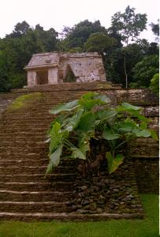
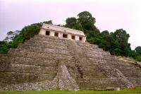
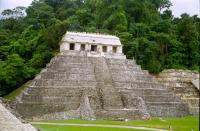

|
Samedi 17 novembre
Il est 8H30, le bus arrive à Palenque. On est gelé mais à l'heure. Le temps
est un peu tristounet, tout gris. Et nous, un peu fatigué. On se renseigne pour
les bus qui vont à San Cristobal de las Casas cet après-midi. On est ici que
de passage. On dépose nos sacs à la consigne et on prend un collectivos pour
rejoindre les ruines. Arrivés devant le site, on petit dejeune, les restes de
notre pic-nique d'hier soir.
Le site nous plait tout de suite. Et moi je suis content, je pensais que j'allais
trouver un site que mon manque de sensibilité archéologique allait faire ressembler
aux deux autres du Yucatan. Et bien non, même si la différence ne vient pas
tant des soubassements ou de que sais-je. La grosse différence, c'est que les
monuments sont entourés d'une végétation incroyablement verte et luxuriante.
En particuler, la pyramide (si, si il y a une pyramide) est adossée à une coline
qui donne l'impression que les arbres sont plus hauts encore. C'est sauvage,
ça nous plait.
Mais les bonnes choses ont toujours une fin, on repart vers midi. Au terminal,
on nous apprend que le bus annoncé à 13H30 ce matin n'existe plus, remplacé
par un de première classe qui ne part qu'à 14H00, dans plus d'une heure. Mais
il y a là un jeune homme qui nous informe qu'il a un bus qui part tout de suite.
On hésite un peu et on se décide pour le sien, presque convaincus qu'il arrivera
après l'autre. Ce dernier ressemble à un vrai bus alors que celui qu'on prend
est plus petit et un peu pourri. Toutes les vitres ont été colmatées, scothées
pour éviter que les fissures ne s'agrandissent. Dans la vitre de la porte, il
y a un énorme trou, presque carré, bien découpé. Peut-être a-t-il un rôle bien
précis après tout!
Nous ne sommes que cinq dans le bus. Un monsieur avec sa fille tout devant,
un garçon seul assis sur le siège arrière où sont posés nos sacs et nous deux
assis au milieu. Et puis le chauffeur et son collègue, son fils peut-être, qui
rabat les gens, les fait monter, referme la porte pourtant automatique, vend
les billets... On chrage quelques personnes de Palenque même, à la sortie du
village, et c'est parti! Le paysage est vraiment chouette. La forêt tropicale
est du même type qu'autour du site. C'est vallonné et on croise même un cours
d'eau à l'eau turquoise, plus turquoise encore que la mer des caraïbes. Et puis
on monte, la végétation reste présente mais change un peu, les conifères font
leur apparition.
On s'arrête sans un premier village, les gens montent et descendent. Derrière
nous une dame s'installe avec ses deux enfants tout intrigués de voir des gringos.
Même si ce terme désigne les nord-amériains, tous les blancs se ressemblent
un peu, non? Les fillettes n'arrêtent pas de nous épier, de nous sourire sous
le regard amusé de la maman. Sympa. Puis on s'arrête à Ocosingo, une ville de
20000 habitants. Ici, on est chez le sous commandant Marcos, cet homme qui,
bien que ni indien ni originaire du chiapas a pris la tête de la guérilla menée
par l'AZLN (Armée Zapatiste de Libération Nationale) composée de paysans indiens
qui se sentent un peu les laissés pour compte du pays...
Le bus se remplit et à côté de nous, deux gars tellemtn imbibés que si quelqu'un
a la folie de sàllumer une cigarette, c'est tout le bus qui saute. Mais ils
ont l'air bien gentils, quoiqu'un peu lourdingues. L'un d'eux qui communique
avec on ne sait quel être imaginaire remue sans cesse les mains. Nous, on a
la côte avec lui. Il n'arrête pas de nous causer et de nous serrer la main.
Il veut même nous offrir de son précieux breuvage, mais vu l'état dans lequel
cet alcool peut mettre, on s'abstient. L'ambiance est donc bien sympathique
mais le bus se traîne un peu. Le fameux de 14H00 vient d'ailleurs de nous doubler,
c'est sûr, on l'a reconnu malgré sa folle vitesse...
On arrive à quelques kilomètres de San Cristobal. Notre ami alcoolisé est sorti
depuis quelques temps maintenant. Il fait noir, on est un peu crevé et il y
a des ralentisseurs sur la route. Tout le temps. Et tellement hauts que le bus
s'arrête complètement tous les 500 mètres pour pouvoir les passer sans casse
(il est déjà assez cassé comme ça...). Ce qui ne l'empêche pas de réaccélérer
comme un fou (enfin, comme il peut avec ce vieux moteur) entre deux de ces foutus
ralentisseurs trop nombreux. Et que dire de ces voitures puissantes qui foncent
entre chacun d'eux... je me demande si c'est efficace.
Quelques ralentisseurs plus loin, on arrive enfin. On trouve vite fait un hôtel
grâce à une pub que nous donne un jeune homme près du terminal. Il nous propose
même de nous y emmener en taxi mais on préfère marché pour garder toute liberté
d'en voir plusieurs. Mais on est tout de suite séduit par le sien avant même
de le voir... il n'est vraiment pas cher (60 pesos pour deux, environ 48FF,
avec salle de bain et eau chaude s'il vous plait!!!). On finit par y arriver
après avoir traversé la ville avec les sacs à dos. On y retrouve le garçon,
rentré en taxi lui. Chambre impeccable au fond d'une cour intérieure, ambiance
familiale, cool... On retourne en ville et on se prend un petit menu tout complet:
soupe à la carotte, petite assiette de spaghetti ensuite, viande avec des frites
et un peu de salade, dessert (un flanc) et café. Sympa cette ville.
Suite du voyage : San Cristobal de las Casas
|

Mexique
Palenque
|

Mexique
Palenque
|
Mexique
Palenque
|

Mexique
Palenque
|
|
|